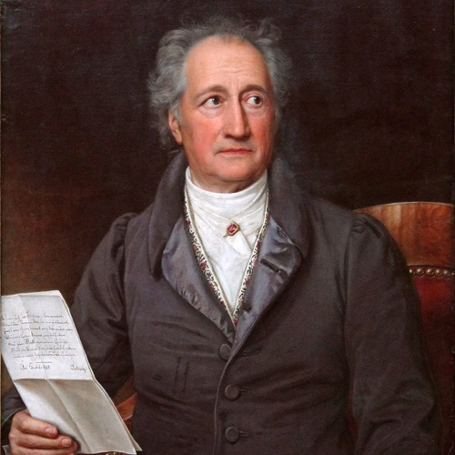

<title>Johann Wolfgang von Goethe</title>
<style>*{
	font-family: Helvetica;
	font-weight: 300;
}
 
main{
	text-align: justify;
	width: 100%;
	font-size: 17px;
	line-height: 1.4; 
}

@media (min-width:17cm){
	main{
		width: 17cm;
		margin: 0 auto;
	}
}

a {
	text-decoration: none;
	color: black;
}

table td:first-child{
	color: silver;
}

h1{
	margin: 12mm 0 4mm 0;
}
h2{
	margin: 8mm 0 4mm 0;
}</style>

<style>.bio p {display: none;}
.bio p:nth-child(2){display: block;}
.bio img {width: 40%; float: right; padding: 0 0 3mm 3mm;}</style>

<main>
<h1>Johann Wolfgang von Goethe</h1><div class='bio'>
<p>Johann Wolfgang von Goethe gilt als einer der bedeutendsten Repräsentanten deutschsprachiger Dichtung.
Goethe stammte aus einer angesehenen bürgerlichen Familie; sein Großvater mütterlicherseits war als Stadtschultheiß höchster Justizbeamter der Stadt Frankfurt, sein Vater Doktor der Rechte und kaiserlicher Rat. Er und seine Schwester Cornelia erfuhren eine aufwendige Ausbildung durch Hauslehrer. Dem Wunsch seines Vaters folgend, studierte Goethe in Leipzig und Straßburg Rechtswissenschaft und war danach als Advokat in Wetzlar und Frankfurt tätig. Gleichzeitig folgte er seiner Neigung zur Dichtkunst, mit dem Drama Götz von Berlichingen erzielte er einen frühen Erfolg und Anerkennung in der literarischen Welt.</p>
<p>Als Sechsundzwanzigjähriger wurde er an den Hof von Weimar eingeladen, wo er sich schließlich für den Rest seines Lebens niederließ. Er bekleidete dort als Freund und Minister des Herzogs Carl August politische und administrative Ämter und leitete ein Vierteljahrhundert das Hoftheater. Die amtliche Tätigkeit mit der Vernachlässigung seiner schöpferischen Fähigkeiten löste nach dem ersten Weimarer Jahrzehnt eine persönliche Krise aus, der sich Goethe durch die Flucht nach Italien entzog. Die zweijährige Italienreise empfand er wie eine „Wiedergeburt“. Ihr verdankte er die Vollendung wichtiger Werke (Tasso, Iphigenie, Egmont).</p>
<p>Nach seiner Rückkehr wurden seine Amtspflichten weitgehend auf repräsentative Aufgaben beschränkt. Der in Italien erlebte Reichtum an kulturellem Erbe stimulierte seine dichterische Produktion und die erotischen Erlebnisse mit einer jungen Römerin ließen ihn unmittelbar nach seiner Rückkehr eine dauerhafte, „unstandesgemäße“ Liebesbeziehung zu Christiane Vulpius aufnehmen, die er erst achtzehn Jahre später mit einer Eheschließung amtlich legalisierte.</p>
<p>Goethes literarische Produktion umfasst Lyrik, Dramen, Epik, autobiografische, kunst- und literaturtheoretische sowie naturwissenschaftliche Schriften. Daneben ist sein umfangreicher Briefwechsel von literarischer Bedeutung. Goethe war Vorbereiter und wichtigster Vertreter des Sturm und Drang. Sein Roman Die Leiden des jungen Werthers machte ihn in Europa berühmt. Selbst Napoleon bat ihn zu einer Audienz anlässlich des Erfurter Fürstenkongresses. Im Bunde mit Schiller und gemeinsam mit Herder und Wieland verkörperte er die Weimarer Klassik. Die Wilhelm-Meister-Romane wurden zu beispielgebenden Vorläufern deutschsprachiger Künstler- und Bildungsromane. Sein Faust errang den Ruf als das bedeutendste Werk der deutschsprachigen Literatur. Im Alter wurde er auch im Ausland als Repräsentant des geistigen Deutschland angesehen.</p>
<p>Im Deutschen Kaiserreich wurde er zum deutschen Nationaldichter und Künder des „deutschen Wesens“ verklärt und als solcher für den deutschen Nationalismus vereinnahmt. Es setzte damit eine Verehrung nicht nur des Werks, sondern auch der Persönlichkeit des Dichters ein, dessen Lebensführung als vorbildlich empfunden wurde. Bis heute zählen Gedichte, Dramen und Romane von ihm zu den Meisterwerken der Weltliteratur.</p>
<p></p>
</div>
<h2>Lebenslauf</h2>
<table>
<tr><td>1749</td><td>geboren in Frankfurt am Main </td></tr>
<tr><td>1765</td><td>Jurastudium in Leipzig </td></tr>
<tr><td>1775</td><td>Verlobung mit Lili Schönemann</td></tr>
<tr><td>1776</td><td>Leitung des Liebhabertheaters am Weimarer Hof</td></tr>
<tr><td>1782</td><td>geadelt</td></tr>
<tr><td>1786</td><td>Italienreise</td></tr>
<tr><td>1888</td><td>Affäre mit der Hutmacherin Christiane Vulpius</td></tr>
<tr><td>1789</td><td>Geburt des Sohnes August Walter von Christiane Vulpius</td></tr>
<tr><td>1792</td><td>Kriegsberichterstatter in Frankreich</td></tr>
<tr><td>1806</td><td>Heirat mit Christiane Vulpius</td></tr>
<tr><td>1808</td><td>Treffen mit Napoleon</td></tr>
<tr><td>1810</td><td>Farbenlehre</td></tr>
<tr><td>1832</td><td>gestorben in Weimar</td></tr>
</table>
<h2>Dramatik</h2>

<table>

	<tr> 
		<td> 1773 </td> 
		<td> <a href='GötzvonBerlichingen'> Götz von Berlichingen </a> </td>
	</tr>

	<tr> 
		<td> 1808 </td> 
		<td> <a href='Faust'> Faust </a> </td>
	</tr>
</table>


<h2>Epik</h2>

<table>

	<tr> 
		<td> 1774 </td> 
		<td> <a href='DieLeidendesjungenWerther'> Die Leiden des jungen Werther </a> </td>
	</tr>

	<tr> 
		<td> 1795 </td> 
		<td> <a href='BassompierresGeschichtevonderschönenKrämerin'> Bassompierres Geschichte von der schönen Krämerin </a> </td>
	</tr>

	<tr> 
		<td> 1795 </td> 
		<td> <a href='WilhelmMeistersLehrjahre'> Wilhelm Meisters Lehrjahre </a> </td>
	</tr>

	<tr> 
		<td> 1809 </td> 
		<td> <a href='DiewunderlichenNachbarskinder'> Die wunderlichen Nachbarskinder </a> </td>
	</tr>
</table>


<h2>Lyrik</h2>

<table>

	<tr> 
		<td> 1770 </td> 
		<td> <a href='DerAbschied'> Der Abschied </a> </td>
	</tr>

	<tr> 
		<td> 1771 </td> 
		<td> <a href='WillkommenundAbschied'> Willkommen und Abschied </a> </td>
	</tr>

	<tr> 
		<td> 1782 </td> 
		<td> <a href='DerErlkönig'> Der Erlkönig </a> </td>
	</tr>

	<tr> 
		<td> 1785 </td> 
		<td> <a href='WillkommenundAbschied'> Willkommen und Abschied </a> </td>
	</tr>

	<tr> 
		<td> 1813 </td> 
		<td> <a href='Gefunden'> Gefunden </a> </td>
	</tr>

	<tr> 
		<td> 1815 </td> 
		<td> <a href='Wiederfinden'> Wiederfinden </a> </td>
	</tr>
</table>


</main>
